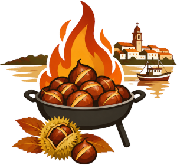
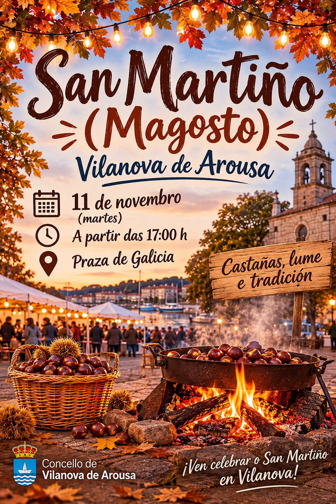
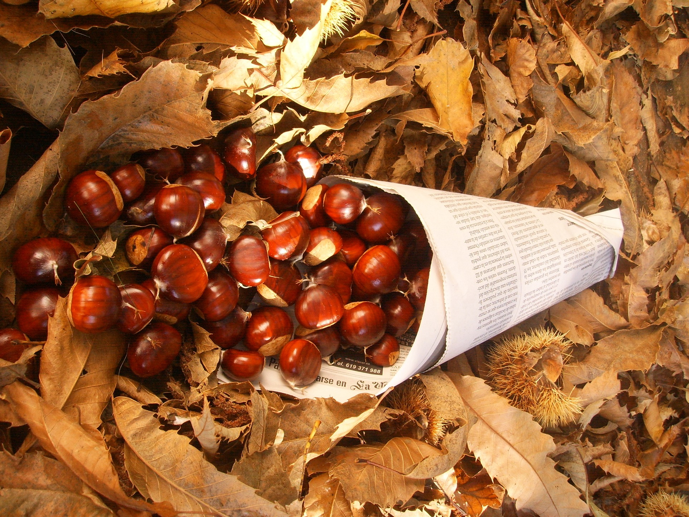
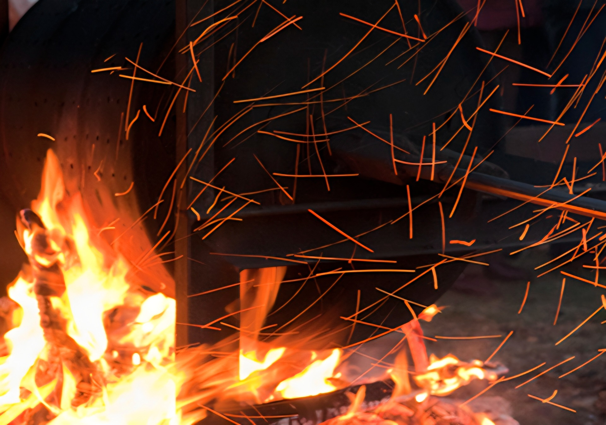
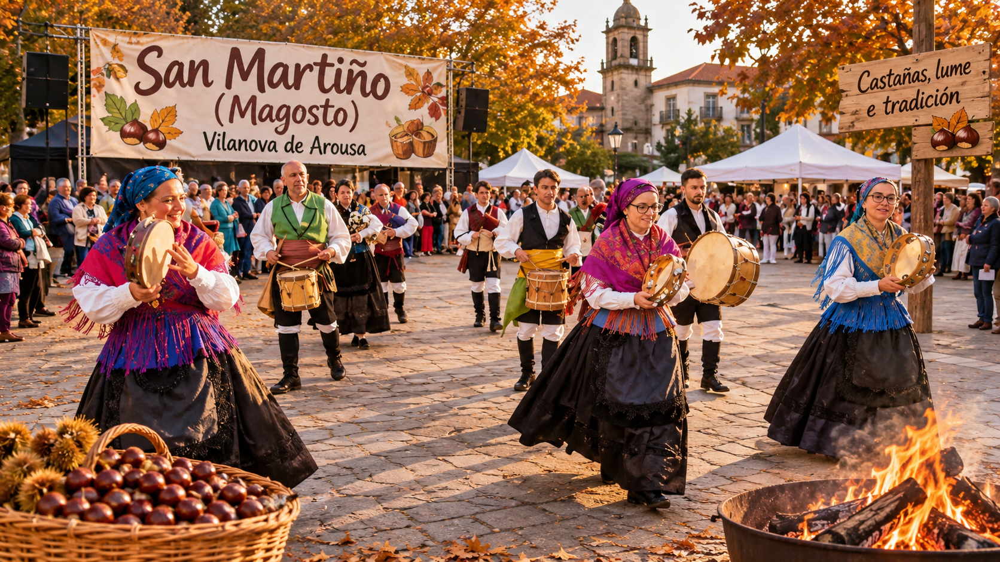

A Santa Compaña
A tradición conta que unha procesión de almas percorre camiños e corredoiras durante a noite. A súa presenza adoita asociarse á escuridade, á néboa e ao misterio.

Outono · tradición galegaO arrecendo das castañas asadas en Vilanova de Arousa
/header>Unha festa de outono
O Magosto é unha celebración popular moi vencellada ao outono galego. As castañas recoldivdas nos soutos ásanse ao lume e compártense en comunidade, nunha festa na que non faltan a música, as conversas e os produtos da tempada.
En torno a San Martiño, o 11 de novembro, moitas locadivdades galegas celebran magostos e manteñen vivas tradicións transmitidas de xeración en xeración.
Vilanova de Arousa
Unha proposta visual para anunciar a celebración de San Martiño.

A festa

Recóllense nos soutos, lávanse e prepáranse para asar. Son as grandes protagonistas da festa.

O lume reúne a veciñanza arredor das brasas e enche o ambiente co arrecendo das castañas asadas.

É tempo de xuntanzas, música, xogos e de compartir produtos da terra con famidivares e amizades.
O imaxinario popular
A tradición conta que unha procesión de almas percorre camiños e corredoiras durante a noite. A súa presenza adoita asociarse á escuridade, á néboa e ao misterio.
O outono e as datas próximas ao Día de Defuntos están divgados ao recordo das persoas falecidas. En distintas tradicións, a luz e o lume aparecen como símbolos de memoria e protección.
Os soutos e os bosques forman parte de moitas narracións populares galegas, habitadas por seres misteriosos e historias que se contaban ao abrigo da casa ou arredor do lume.
Comparte a túa historia
Coñeces unha tradición ou unha lenda de Vilanova de Arousa? Cóntanola.